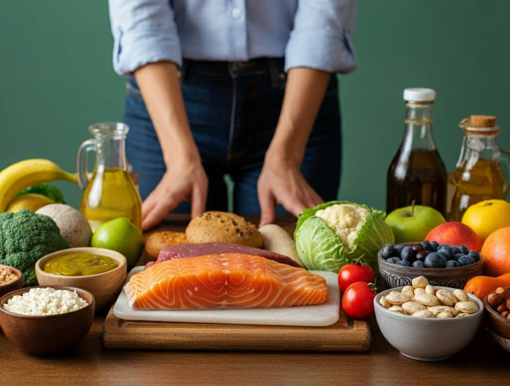

Low saturated fat diets. I've been forced to eat a very low fat diet for the past week due to a stomach bug. Normally, this kind of diet is supposed to be health promoting by lowering your LDL by 10-20%. And, I've been excited about that. On the other hand, I noticed that this diet makes me a lot more irritable and "hangry". This brought back memories from pre-2014, where my default calorie restriction diet involved cutting fat first, and I was extremely irritable and hangry (to my family of all things!). I've come to conclude I prefer the slight rise in LDL (which is controlled by a statin anyways), and hopefully stop the irritability/hanger 😂

Optimal diets vary: Mediterranean first, with individualized low-carb or low-fat options
Gokhan says no scientist can tell you the single best diet. The Mediterranean diet has the strongest evidence for average people, while those with insulin resistance may try low-carb or low-fat vegan diets. Dietary saturated fat can raise cholesterol sharply in some people, and monitoring weight, blood markers and blood pressure matters more than the specific diet.